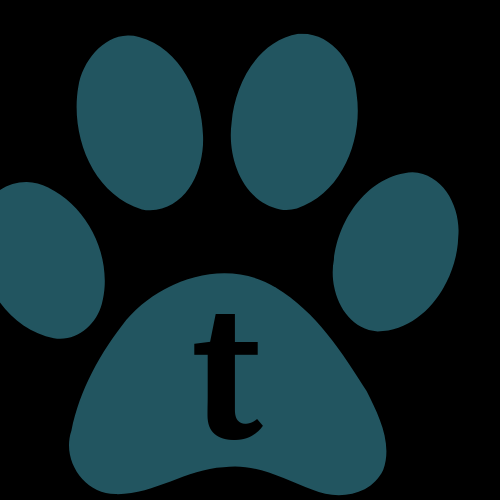

<ion-header>
  <ion-toolbar>
    <ion-row class="btwn">
      <div>
        <button class="smolbtn" mat-icon-button routerLink='my-pets'>
          <mat-icon routerLink="/my-pets" class="backArrow">keyboard_arrow_left</mat-icon>
        </button>
        <button class="smolbtn" mat-icon-button routerLink='/vet-info'>
          <mat-icon>local_hospital</mat-icon>
        </button>
      </div>

      <h1 class="navTitle">Add Pets</h1>

      <div class="end">
 
        <button class="smolbtn" mat-icon-button routerLink='/account'>
          <mat-icon>account_circle</mat-icon>
        </button>
      </div>
    </ion-row>
  </ion-toolbar>
</ion-header>

<ion-content>
  <ion-grid>
    <ion-row>
      <ion-col size="12" class="end">
        <button mat-icon-button routerLink='/pet-info'>
          <mat-icon>save</mat-icon>
        </button>
      </ion-col>
      <ion-col size="12" class="center">
        <div class="picture">
          
        </div>
      </ion-col>
      <ion-col size="12" class="center">
        <div class="camera d-flex align-items-end">
          <mat-icon class="greyCamera">camera_enhance</mat-icon>
        </div>
      </ion-col>

      <ion-col size="12">
        <div class="overFlow">
          <ion-item class="inputBox">
            <ion-label position="stacked">Pet Name</ion-label>
            <ion-input type="text" placeholder="e.g. Triton"></ion-input>
          </ion-item>
        </div>
        <div class="overFlow mt-1">
          <ion-item class="inputBox">
            <ion-label position="stacked">Pet Description</ion-label>
            <ion-input type="text" placeholder="e.g. Axolotl"></ion-input>
          </ion-item>
        </div>
      </ion-col>

      <ion-col class="bottomRight">
        <p (click)="removePetProfile()"><u>Remove Pet Profile</u></p>
      </ion-col>
    </ion-row>
  </ion-grid>
</ion-content>

<ion-footer>
  <ion-grid>
    <ion-row>
      <ion-col class="center">
        <button mat-icon-button color="accent" aria-label="Example icon button with a home icon" routerLink = '/my-pets'>
          <mat-icon>pets</mat-icon>
        </button>
      </ion-col>
      <ion-col class="center">
        <button mat-icon-button color="primary" aria-label="Example icon button with a menu icon" routerLink = '/home'>
          <mat-icon>home</mat-icon>
        </button>
      </ion-col>
      <ion-col class="center">
        <button mat-icon-button color="warn" aria-label="Example icon button with a heart icon" routerLink = '/journal-entries'>
          <mat-icon>local_library</mat-icon>
        </button>
      </ion-col>
    </ion-row>
  </ion-grid>
</ion-footer>